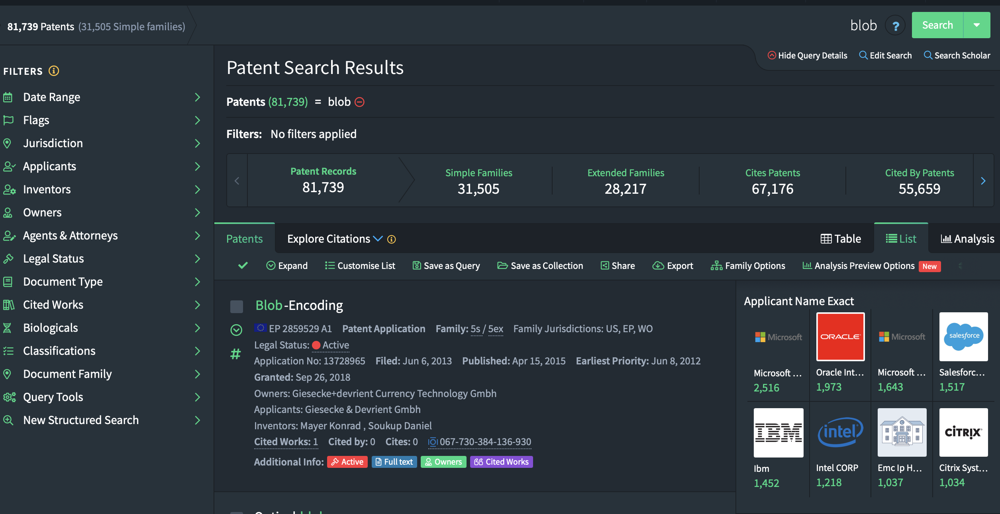
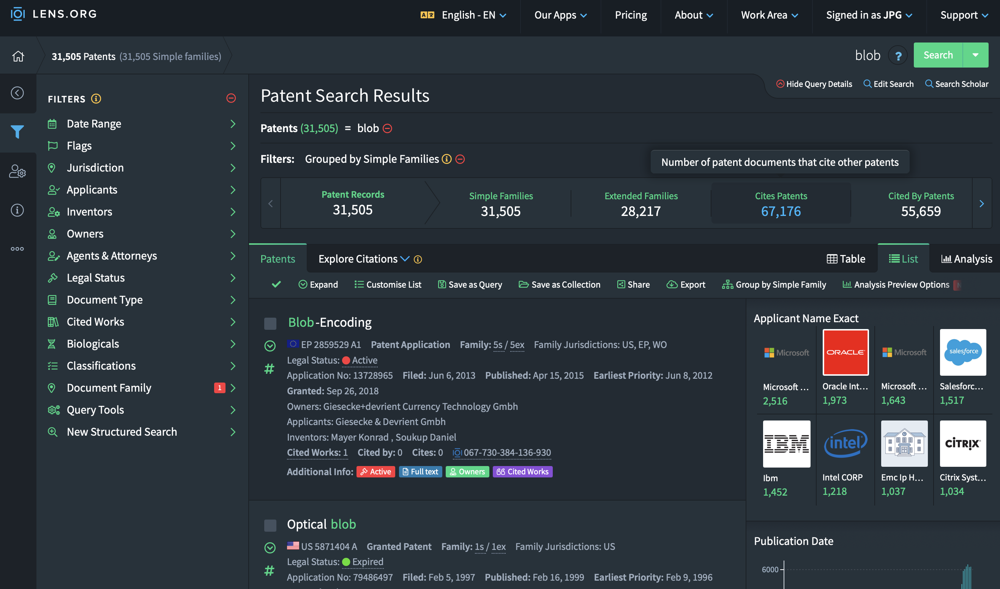
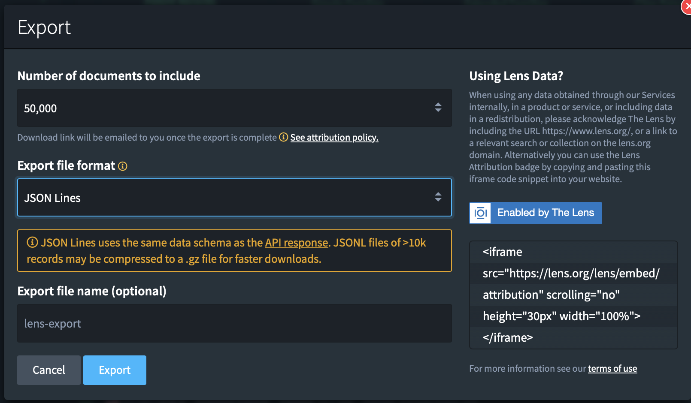
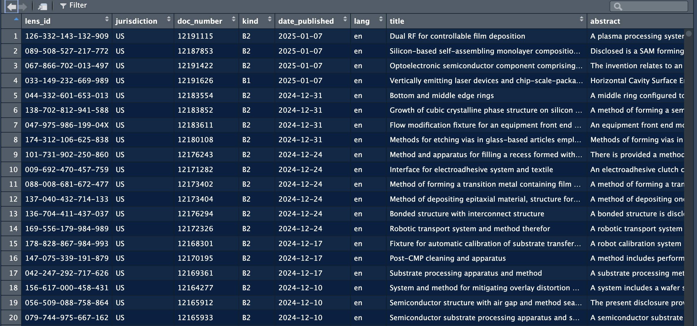
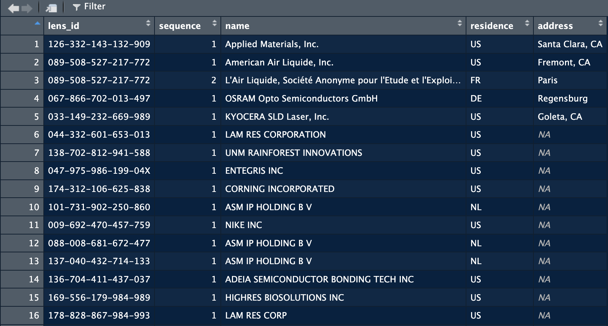
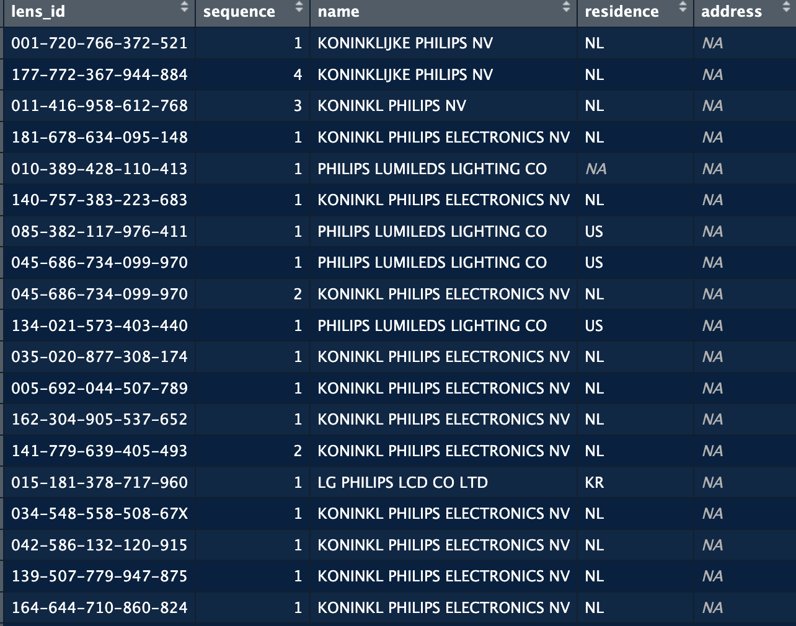
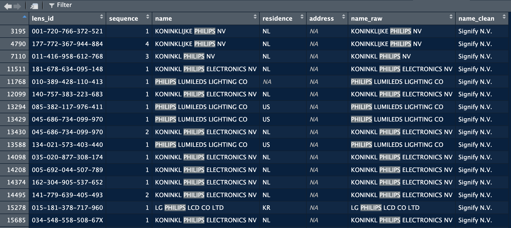

remotes::install_github("jpvdp/NetworkIsLifeR")Extracting Patent Data
This page shows how to extract information from patent sets exported from lens.org. Using functions from the NetworkIsLifeR package we will show here how to extract and organise data from the jsonl files exported from lens in order to perform innovation science analyses.
1. Export data from lens.org
After you are happy with the query you build to find relevant patents you will arrive at the final result of your search. In the image below you see the screen you should have arrived at.

You will notice that there are three main numbers reflecting the observations that were identified. The best option is to click on “Simple Families”. This options groups patents from the same family together. This avoids issues where you end up with 10 patents that are fundamentally the same, but applied for in 10 different countries. The simple family option allows us to count those as one patent. This is standard practive in innovation sciences.\ Your screen should now show the number of simple families as the first number in the list:

Once that is done you can click on the “Export” button. A popup window will be displayed giving you a variety of options. Depending on how many search results you had, pick the correct number of documents to export. If your search returned 9000 patents, pick 10K, if it was more tha 10K, pick 50K.
The format of the export is important since it defines the information that will be exported. The CSV format will have a lot of valuable information but does not contain textual information or geographical information for the patents. This is however information that we would like to work with. This means that we need to pick the jsonl file format, this is the only format that exports all available information.

Once you’re done. Click on “Export”.2. Loading the data into R.
The jsonl formats are both very handy and quite annoying data formats. On the one hand it’s an amazing format to store complex data structures, on the other hand, it makes extracting this information into tabular form a complicated task when the data is not homogenous (which it very much isn’t in the case here.).\
Patents contain many different datapoints (citations, classifications, authors, assignees, countries, abstracts) and because all patents are different the datables in which the information for each patent is stored do not always match in terms of dimensions. The table with assignees can be 2 x 4 on one patent and 3 x 2 for another. It’s hence difficult to create one nice table with all assignee information. This is where the NetworkIsLifeR package comes in. It contains functions that extract information from the jsonl format and puts it back into 2 dimensional tables that are easier to work with for specific analyses. In what follows we will show you how to extract specific tables from the jsonl files in R.
2.1 Installing the package
The package is currently hosted on github. To download and install the package:
Once installed we load the package as we normally would:
library(NetworkIsLifeR)2.2 Extract basic patent information
If we are interested in the basic information from the patents we can use the process_patent_jsonl_fast function that will extract a dataframe with the most relevant data points from the patents.
The function requires one argument: the path the a jsonl file. If the path points to a folder, then all the jsonl files will be taken and used to create
patents = process_patent_jsonl("/Users/janpieter/Patents")This function will create a dataframe with multiple variables:

The full data extracted is:| Variable name | Meaning |
|---|---|
lens_id |
Unique identifier for the patent record in the Lens dataset (Lens.org ID). |
jurisdiction |
Patent office / authority code indicating where the document is published or filed (often a country/region code such as EP, US, WO). |
doc_number |
The publication document number within the jurisdiction (the numeric/alphanumeric part of the publication identifier). |
kind |
Kind code indicating the publication stage/type (e.g., application publication vs grant; exact semantics depend on office). |
date_published |
Publication date of the document (typically the date the document was made public). |
lang |
Language code of the textual fields (e.g., title/abstract language, where available). |
title |
Patent title text (usually the primary title in the record’s language). |
abstract |
Patent abstract text. |
app_doc_number |
Application document number (the application identifier, as distinct from the publication number). |
app_date |
Filing date of the application (application date). |
priority_date |
Earliest claimed priority date (often used as a proxy for the invention’s earliest filing date). |
applicants |
Applicant/assignee entity or entities associated with the application (often a list collapsed to a string or a structured field, depending on your extractor). |
inventors |
Inventor name(s) associated with the document (often a list collapsed to a string or a structured field, depending on your extractor). |
ipc_classifications |
IPC codes assigned to the document (may include multiple classes/subclasses/groups). |
patent_status |
High-level legal/procedural status as represented in the source (e.g., pending, granted, lapsed), depending on availability. |
granted |
Logical indicator for whether the document has been granted (TRUE/FALSE). |
grant_date |
Grant date (if granted), otherwise typically NA. |
cited_by_count |
Count of citations received by this patent (forward citations) as reported in the source. |
simple_family_size |
Size of the “simple” patent family (typically count of publications in the family under a narrower family definition). |
extended_family_size |
Size of the “extended” patent family (typically broader INPADOC-style family count, depending on source definition). |
2.3 Extract specific tables
There a different functions in the package that allow for the extraction of tables related to specific data points in the patent dataset.
2.3.1 Extract assignee level information
The assignee function extract information at the assignee level from the jsonl files. The tables that are exported from the data will have one row per assignee, instead of one row per patent. Also, the geographical information is extracted when available.
applicants = extract_applicants_table("/Users/janpieter/Documents/testing")
The function returns the names of the assignees of the patents as written on the patent. The Country has a good coverage overall, but as shown in the image above, the details of the address is another question. Coverage of the latter is extremely low. Below are the explanations of the columns:
| Variable name | Meaning |
|---|---|
lens_id |
Unique identifier for the patent record in the Lens dataset (Lens.org ID); used to link applicants back to the originating patent. |
sequence |
Applicant order on the patent record (1 = first listed applicant/assignee, 2 = second, etc.). |
name |
Extracted applicant/assignee/owner name (typically the normalized “extracted name” value from the JSON record). |
residence |
Applicant country as provided in the record (often a country code or location string; may be missing). |
address |
Extracted applicant address as provided in the record (may be missing and/or unstructured). |
Linking the assignees to the other patent tables can be done through the lens_id.
2.3.2 Cleaning assignee names
The names of the companies are not clean. They appear as written by the applicants, or as read by machines from handwritten documents. As a results we have many variations of company names that actually refer to the same company. For example in a patent set on semiconductors, these are some variations of philips:

The issue here is that if we want to count how many patents Philips has, or with whom they are collaborating, we would end up with incorrect numbers or a very segmented view of the company which is not always useful. We hence want to clean/harmonise this data as much as we can. For this we proceed in three steps:- First we remove any legal indications for the companies (NV, GMBH, SARL, CO). We do this because a lot of the variation of company names come from BV, B.V., B V, B.V etc. The information these elements contain are not useful in many cases.
- Second we harmonise specific terms. It’s common for companies when writing their names to put abbreviations for certain terms: Tech (technologies), Dev (Development), Res (Research), MGT (Management), INS (Institute), IND (Industry). We replace terms by their short form to harmonise these words throughout the dataset.
- Finally, we create cleaning and harmonisation rules. There rules take the form of combinations of terms. For the case of philips for example, we know that if the company name contains Philips (given the focus of the dataset), we are almost certain that it’s a Signify patent. So we create a rule that if “philips” is a word in the name, then we replace it with signify. For more complex cases, we can require multiple terms to be combined in a name. For example Utrecht and a string that starts with Uni, will be replaced with Utrecht University. By creating these rules we can significantly reduce the number of variations of names in the dataset and remove significant errors.
These steps are summarised in a function called clean_company_names. This function will load a list with rules supplied with the package, or a custom set of rules supplied the user. The list supplied with the package only contains names for big tech companies. It’s recommended for the user to create their own list of rules by taking the file supplied as a template.
As an input the function requires a dataframe with one column with company names. The company_col argument allows you to specify in which column the company names are stored. The initial names will be preserved, the function adds a new column with the cleaned name.
applicants = clean_company_names(applicants, company_col = "name")In the screenshot below you can see that the function added a name_raw column with the initial names, and a name_clean column that contains the new name as specified by the rules in the file.

2.3.3 Adjusting the cleaning table
The cleaning table provided with the package does not cover all companies in the world of course. When working on a domain or region, one can improve the cleaning by adjusting the cleaning set fit for purpose. In the following we will explain how to manually adjust the reference list.
There reference list comes in the form of an R file, to make it easily amendable. The file is named “company_rule.R” and can be found in the inst folder.
The script in the file creates a tibble with five columns. Before looking into the details of the columns, you can already see the logic, we define tokens (proper nouns or part of proper nouns) that allow us to identify a specific organisation in imperfect strings and replace it with a canonical reference name:
rules <- tibble::tribble(
~priority, ~type, ~tokens, ~pattern, ~canonical,
1, "ALL", list(c("TECHNISCHE", "HOCHSCHULE", "AACHEN")), NA, "RHEINISCH-WESTFAELISCHE TECHNISCHE HOCHSCHULE (RWTH)",
1, "ALL", list(c("COSUN")), NA, "KONINKLIJKE COOEPERATIE COSUN",
3, "ALL", list(c("philips|signify|filips koninklejke")), NA, "Signify N.V.",
1, "ALL", list(c("asml|asmlnetherlands")), NA, "ASML Netherlands B.V.",
1, "ALL", list(c("\\bnxp\\b")), NA, "NXP B.V.",The tibble contains five columns that define how the system works:
| Column | Description |
|---|---|
| priority | Sets the order in which the rules should be applied. |
| type | "ALL" means all conditions must be met. "ANY" means at least one must be met. |
| tokens | The names (or parts of names) used for cleaning. |
| pattern | Optional regex pattern used for matching (if provided). |
| canonical | The harmonised name to use as the reference. |
For example: we noticed many variations of the name of philips earlier on: philips, lumileds, konikl philips, filips. We want to replace all these with a reference name, which for our purpose here will be Signify N.V. To achieve this we need to create a list of tokens that allow us to identify these variations and replace them. We build this with a combination of logic and regex operators.
We saw many more variations with also mistakes in “koninklijke” (koninkl, konink, koninkijk, for these case we need to find a common root. Here this could be “konink”. Setting konink as a token we will consider for instance that all strings that contain a token starting with konink and have philips, will be considered philips. To specify that we want all strings that start with konink we use “.*”. This operators comes from the Regex language, and means “match any number of any characters” after what precedes. So it will match all the variations we saw before. We want to combine this with philips to make sure that we only replace koninklijke philips and not any other company name that might contain a generic name such as “koninklijke”.
For these cases we combine two tokens. We want both to be included, so we set the second argument to “ALL” with the tokens as we just described them. This results in a line that will replace all strings that contain at least koning and a token “philips”.
1, "ALL", list(c("konink.*", "philips")), NA, "Signify N.V.",This example is however not optimal, we can also consider that any company name that contains “philips” will in fact refer to signify, the same goes for lumileds. So we can say that if the string contains philips or lumileds, then we want to replace with signify. In this example, signify is the canonical form, philips and lumileds are the tokens.
1, "ALL", list(c("philips|lumileds")), NA, "Signify N.V.",With this line, the script replace any string that contains philips or lumileds and replace it with Signify N.V.
NoteCleaning recommendations
The cleaning/harmonisation of company names is highly context dependent. Depending on the topic/focus of your project you might consider different levels of cleaning. In the case of Philips, for a European-level analyis, I am happy enough with all subsidiaries being replaced with Signify.
In more detailed analyses, we might want to keep Lumiled, Philips, Signify, Philips Electronics as separate entities.
Because of this highly context dependent nature, cleaning still has an important manual component. The method provided here allows to automate as much as possible while keeping the possibility to adjust to the focus of your analysis.
2.3.1 Extract geographical information
When working with patent data, you’ll often encounter datasets where each patent can have multiple assignees, and each assignee may appear multiple times across different patents with varying location information. These two functions help you consolidate and analyze assignee location data.
The Problem
Patent databases typically structure assignee data with one row per assignee per patent. This means:
- The same company may appear hundreds of times across different patents
- The same company may be listed with different countries (e.g., “USA”, “Germany”, “Japan”)
- The same company may have different addresses across patents
- You need to decide: “What is the ‘main’ country for each assignee?”
Function 1: assign_most_frequent()
What it does
This function assigns one country and one address to each unique assignee name based on which appears most frequently in your data.
When to use it
Use this function when you want to: - Create a clean assignee master list with one location per assignee - Simplify your data by treating each assignee as having a single “home” location - Join assignee location data to other datasets
Input
A data frame with these columns: - name: Assignee name (e.g., “Samsung Electronics”) - residence: Country (e.g., “South Korea”) - address: Address (e.g., “Suwon”)
You may also have lens_id and sequence columns, but the function doesn’t use them.
Output
A data frame with one row per assignee containing: - name: Assignee name - country: Most frequent country for this assignee - country_pct: What percentage of this assignee’s patents come from this country - address: Most frequent address for this assignee - address_pct: What percentage of this assignee’s patents list this address - total_records: How many patent records this assignee has in total
Example
Input data:
name residence address
Acme Corporation USA New York
Acme Corporation USA New York
Acme Corporation USA Boston
Acme Corporation Canada Toronto
Acme Corporation USA New YorkCode:
library(yourpackagename)
result <- assign_most_frequent(patent_data)
print(result)Output:
name country country_pct address address_pct total_records
Acme Corporation USA 80.0 New York 60.0 5Interpretation: - Acme Corporation appears in 5 patent records - 80% of these records list USA as the country - 60% list New York as the address - Therefore, we assign USA and New York as Acme’s “main” location
Key points
- Percentage matters: A low
country_pct(e.g., 35%) suggests the assignee has operations in multiple countries. A high percentage (e.g., 95%) indicates a clear home country. - Missing data: If an assignee has all NA values for country or address, those fields will be NA in the output.
- Ties: If two countries appear equally often, the function picks the first one alphabetically.
Function 2: assignee_country_summary()
What it does
This function creates one row for each assignee-country combination, showing you the geographic distribution of each assignee’s patents.
When to use it
Use this function when you want to: - Understand the geographic spread of multinational companies - See how many patents each company has filed from different countries - Identify which assignees are truly multinational vs. concentrated in one location - Analyze location patterns across your dataset
Input
Same as Function 1: a data frame with name, residence, and address columns.
Output
A data frame with one row per unique assignee-country pair containing: - name: Assignee name - residence: Country - country_records: Number of patents for this name-country combination - country_pct: Percentage of this assignee’s total patents from this country - total_records: Total patents for this assignee across all countries - address: Most frequent address for this name-country pair - address_pct: Percentage of records with this address (within this country)
The output is sorted by assignee name, then by descending country_records (most patents first).
Example
Input data:
name residence address
Global Tech USA California
Global Tech USA California
Global Tech USA Texas
Global Tech Germany Munich
Global Tech Germany Munich
Global Tech Japan Tokyo
Local Inc Canada TorontoCode:
result <- assignee_country_summary(patent_data)
print(result)Output:
name residence country_records country_pct total_records address address_pct
Global Tech USA 3 50.0 6 California 66.7
Global Tech Germany 2 33.3 6 Munich 100.0
Global Tech Japan 1 16.7 6 Tokyo 100.0
Local Inc Canada 1 100.0 1 Toronto 100.0Interpretation: - Global Tech is multinational: 50% USA, 33% Germany, 17% Japan - Local Inc operates only in Canada (100%) - Within the USA operations, Global Tech files most patents from California (67%)
Key points
- Geographic diversity: You can quickly see which assignees operate in multiple countries
- Dominant locations: The rows are sorted so you see the most important countries first
- Missing data: Rows with NA in
nameorresidenceare filtered out automatically - Comparison: Unlike Function 1, this doesn’t force a single country assignment—you see the full distribution
Choosing Between the Functions
| Scenario | Use This Function |
|---|---|
| I need one location per assignee for merging with other data | assign_most_frequent() |
| I want to see the geographic distribution of assignees | assignee_country_summary() |
| I’m creating a master assignee table | assign_most_frequent() |
| I’m analyzing multinational patent strategies | assignee_country_summary() |
| I want a simple, clean dataset | assign_most_frequent() |
| I want to preserve information about all locations | assignee_country_summary() |
Practical Workflow
A common workflow might be:
First, use
assignee_country_summary()to explore your data# See the distribution summary_data <- assignee_country_summary(patent_data) # Find highly multinational assignees multinational <- summary_data %>% group_by(name) %>% filter(n() > 3) # Assignees in 4+ countriesThen, use
assign_most_frequent()for your main analysis# Create clean master list assignee_master <- assign_most_frequent(patent_data) # Flag assignees with low country concentration assignee_master <- assignee_master %>% mutate(multinational = country_pct < 75)
Common Questions
Q: What if an assignee has 50% of patents in USA and 50% in Germany?
A: assign_most_frequent() will pick one (alphabetically, so Germany). Check the country_pct column—if it’s around 50%, you know it was a close call.
Q: Should I clean the country names before using these functions?
A: Yes! Make sure “USA”, “US”, and “United States” are standardized to one value first, otherwise they’ll be treated as different countries.
Q: What about assignees that changed countries over time?
A: These functions look at frequency, not time. If you care about temporal patterns, you may need to split your data by time period first.
Q: Can I use these functions for other types of data?
A: Absolutely! The logic works for any dataset where you have entities (names) with multiple locations. Just make sure your columns are named name, residence, and address.